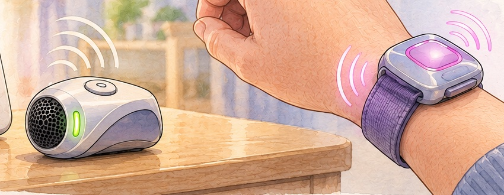

Two parents, one bed, one on duty
The one on duty wears it. The one off duty gets to sleep.
Earplugs in, and still listening
The monitor's hiss, a snoring partner or the street outside keeps them awake, but earplugs feel like neglect. With the watch on, they can block out the room and still be the first to know when the baby actually needs them, and how urgently.
Sleeps through the whole thing
A beeping monitor wakes everyone in the room. A buzz on one wrist wakes one person. Swap the watch at the next feed, or strap it to an ankle if wrists are busy holding a baby.

"Bzz. Bzz-bzz. BZZZ."3:12 am. The monitor is at normal volume across the room, the earplugs are in, and the wrist feels the crying ramp up before anyone else in the house hears it.
Turn it up, feel it harder
Pick what the monitor is playing. Every 250 ms the sensor measures how loud it is and sorts that into one of four levels. The watch buzzes to match, a little harder with each round, until someone taps "I'm awake".
loudness 18
All quietThe green link light blinks with the sensor's heartbeat.
This is a simulation of the first-pass firmware plan, not real audio. The thresholds are guesses, and a real sensor would be calibrated to your monitor's volume. The phone buzz only works in browsers that support vibration (most Android phones, not iPhones).
Pearl shells, chrome grille, one glowing lens
Both devices are in one first-pass CAD model, sized around real parts: the cells, the coin motor and the two routed boards. Drag to spin it.
- Sensor shellA lofted, asymmetric "gamer mouse" body, 63 × 43 × 33 mm, with a lavender swoosh sweeping up the sides. Too big for the small-parts test cylinder in any orientation.
- Stage-mic grilleA chrome collar and a domed honeycomb cage on the nose, with a green status slit beside it. The mic sits right behind the cage.
- Controls and mountingA Ø12 "I'm awake" button on the crown (tap to stop the buzz, hold to pair). USB-C and a lavender power slider are on the back, with a VHB pad underneath for sticking it to the monitor.
- The sealed watch38 × 38 mm with no holes in the sides. The magenta lens is a diffuser over an RGB LED, not a screen. A green link light sits at 6 o'clock.
- Skin-side back plateThe coin motor is glued inside so the buzz goes straight into the skin. Two gold charge contacts and two off-centre magnets mean the clip charger only fits one way. The 20 mm spring bars take any elastic band.
Two boards, one link
Each device has its own routed two-layer board with an ESP32-C6 module, and the two talk directly over ESP-NOW. The sensor's 52 × 24 mm board hangs in its crown, and the watch's 30 × 30 mm board hangs under the lens. Both carry parts on both faces.
Sensor board52 × 24 mm
Watch board30 × 30 mm
Two brains, no router
ESP-NOW links two ESP32s directly in about a millisecond, with no Wi-Fi network, no app and no account. The sensor sends a heartbeat every few seconds, and if it stops, the watch gives a "lost link" buzz.
Ears
A digital I2S MEMS mic, ported through the board to the grille. The sensor measures loudness every 250 ms and sorts it into quiet, fussing, crying or screaming.
The buzz
A Ø10 × 2.7 mm coin motor, switched by a MOSFET at 20 kHz with a flyback diode. Intensity is set by the PWM duty, capped at about 70 % because the motor is rated for 3 V.
The Winamp glow
A 2 mm RGB LED under the frosted lens. Its colour follows the level, and it blinks green when the "I'm awake" tap arrives.
Charging without a port
Two spring pins press on gold contacts in the back plate. A Schottky diode blocks reversed polarity and keeps the cell's voltage off the exposed contacts, so sweat can't drain it.
Sensor power
USB-C runs the sensor beside the monitor and charges a 2000 mAh cell for nights away from home. A power-path switch stops it float-charging all night, and a slide switch turns it fully off.
Sensor bill of materials (21 lines)
Watch bill of materials (19 lines)


What we still don't know
This is a speedrun first pass. Here's what we'd answer before anyone orders a board or cuts a mould.
- Battery
Does 150 mAh last a whole night?
The watch has to keep listening for the sensor all night. That only works if the radio sleeps between heartbeats, which is firmware work. Measure it on a dev board before fixing the case thickness. A bigger cell makes the watch thicker.
- Fit
The fit check needs a re-run
Both boards were re-routed (DRC 0 / 0) after the hosts dropped the watch's button and USB port and gave the sensor a bigger cell. The board-in-enclosure fit checks were last run before those changes.
- Feel
Will a coin motor wake a deep sleeper?
An ERM through an elastic band is gentle. If it isn't enough, the upgrade is an LRA with a DRV2605L driver: crisper, stronger and able to play patterns.
- Hearing
Can it tell crying from a white-noise machine?
Loudness alone can't. Lots of nurseries run white noise all night, so the sensor needs calibrating to the room, and probably a filter tuned to the pitch of a cry.
- Finish
Chrome that doesn't block the radio
Real metal plating would shield the 2.4 GHz antennas. The Y2K chrome look has to be NCVM (non-conductive vacuum metallising) or pearl paint.
- Watch
How do you stop it from your wrist?
With no button, you can only stop the buzz from the sensor. A tap gesture would need an accelerometer, and it's still an open question whether the watch should be able to switch itself off.